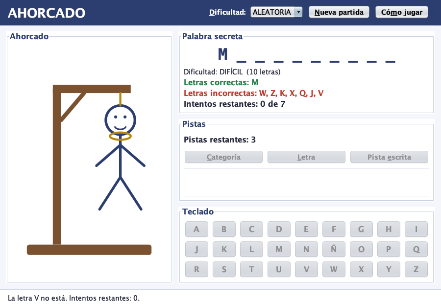
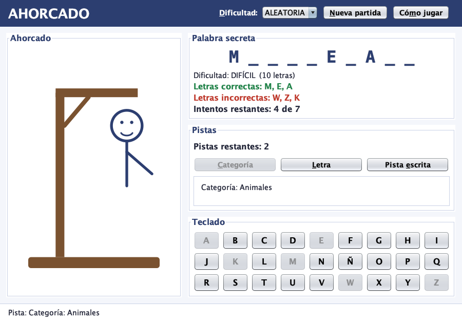
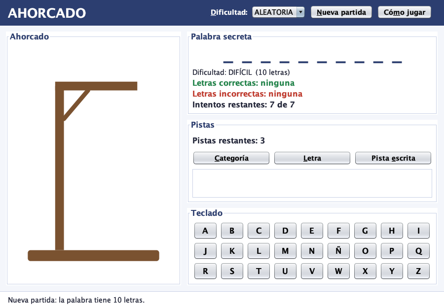
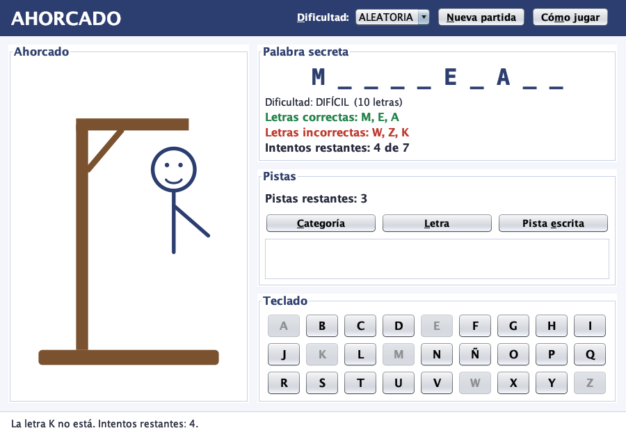
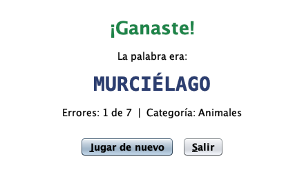
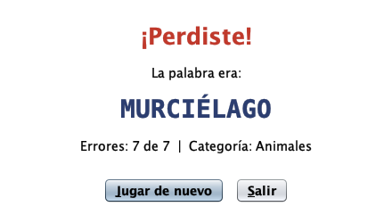
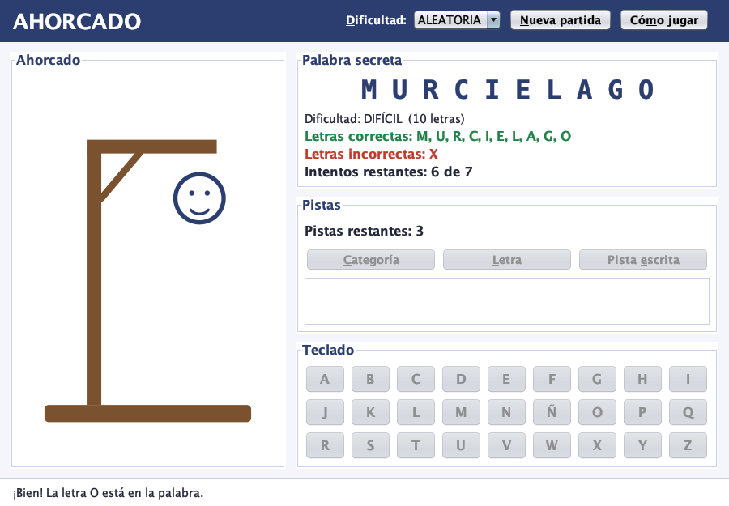

Daniel Esteban Ortiz Pinzón
Universidad EAN
Programación Orientada a Objetos
Noviembre de 2026
Video del proyecto (YouTube): https://youtu.be/R6azp1shkIs
Bienvenido al Juego del Ahorcado Interactivo, un programa de escritorio hecho con Java Swing para el curso de Programación Orientada a Objetos de la Universidad EAN. El computador elige una palabra secreta y tú tratas de descubrirla letra por letra antes de cometer 7 errores.
El juego incluye:
El programa se compila y se ejecuta con el JDK de Java, la plataforma oficial de Oracle (s. f.-a), y su interfaz usa la biblioteca gráfica Swing (Oracle, s. f.-b). Este manual explica, paso a paso, cómo instalar, ejecutar y jugar. No necesitas saber programar para seguirlo.
| Elemento | Requisito |
|---|---|
| Java | JDK 17 o superior (con javac y java disponibles en el PATH). No se usan librerías externas. |
| Sistema operativo | Cualquiera con Java: Windows, macOS o Linux. |
| Espacio en disco | Aproximadamente 10 MB. |
| Pantalla | Resolución de 900 x 680 o superior (la ventana abre con ese tamaño; el mínimo permitido es 780 x 600). |
| Entorno gráfico | Necesario para abrir la ventana del juego. |
Para comprobar tu versión de Java abre una terminal y escribe:
javac -versionDebe responder javac 17 o un número mayor.
El juego no necesita instalador: se compila una vez y se ejecuta. Abre una terminal, entra a la carpeta del proyecto y ejecuta los comandos de tu sistema. Todos se ejecutan desde la carpeta codigo_fuente.
cd codigo_fuente
mkdir -p out
javac --release 17 -encoding UTF-8 -d out $(find src -name "*.java")
java -cp out Maincd codigo_fuente
mkdir out
dir /s /b src\*.java > fuentes.txt
javac --release 17 -encoding UTF-8 -d out @fuentes.txt
java -cp out MainEn PowerShell, la compilación se hace así:
javac --release 17 -encoding UTF-8 -d out (Get-ChildItem -Recurse src -Filter *.java).FullNameSi prefieres un único archivo ejecutable, créalo después de compilar (el comando es el mismo en macOS, Linux y Windows):
jar --create --file ProyectoAhorcado.jar --main-class Main -C out .
java -jar ProyectoAhorcado.jarjava -cp out Main --verificarImprime el total de palabras y el conteo por categoría y por dificultad, y termina sin abrir la ventana.
-encoding UTF-8 para que las tildes y la Ñ se vean bien en la ventana.Al abrir el juego aparece de inmediato una partida lista. Sigue estos pasos:
_ _ A _. Debajo verás la dificultad y el número de letras.Cada error dibuja una parte del cuerpo, en este orden exacto:
| Error | Parte que se dibuja |
|---|---|
| 1.º | Cabeza |
| 2.º | Torso |
| 3.º | Brazo derecho |
| 4.º | Brazo izquierdo |
| 5.º | Pierna derecha |
| 6.º | Pierna izquierda |
| 7.º | Cuerda (la soga que baja de la viga hasta la cabeza) |
"Derecho" e "izquierdo" se refieren al lado de la pantalla.
Además:

En la barra superior, el selector Dificultad ofrece cuatro opciones: ALEATORIA, FÁCIL, MEDIO y DIFÍCIL. La opción elegida se usa cuando empiezas una nueva partida.
| Opción | Palabras que puede elegir |
|---|---|
| ALEATORIA | Cualquier palabra del banco, de cualquier nivel. |
| FÁCIL | Palabras de 3 a 5 letras. |
| MEDIO | Palabras de 6 a 8 letras. |
| DIFÍCIL | Palabras de 9 o más letras. |
La dificultad depende solo de la longitud de la palabra. Dentro del panel Palabra secreta el juego muestra el nivel y el número de letras de la palabra actual. El juego no repite palabras hasta agotar las posibles para el nivel elegido.
El banco tiene 200 palabras: 8 categorías de 25 palabras cada una.
| Animales | Países | Deportes | Objetos |
| Comidas | Profesiones | Frutas y verduras | Tecnología |
Todas las palabras se escriben en mayúsculas y sin espacios.
En el panel Pistas hay tres botones. Puedes usarlos en cualquier momento de la partida, pero cada pista solo una vez por partida. Al usar una, su botón se deshabilita (se ve en gris) y el contador Pistas restantes: N baja. El texto de cada pista queda guardado en el recuadro de pistas obtenidas.
| Botón | Qué hace | Texto que verás |
|---|---|---|
| Categoría | Dice a qué categoría pertenece la palabra secreta. | Categoría: Animales |
| Letra | Revela una letra al azar de la palabra que aún no hayas descubierto. No cuenta como error. | Se reveló la letra: X |
| Pista escrita | Muestra una frase de ayuda propia de esa palabra. | Una frase corta, con tildes. |

Teclas de acceso rápido: Alt+C (Categoría), Alt+L (Letra) y Alt+E (Pista escrita). Ver la sección 9.
La ventana se llama "Juego del Ahorcado - Universidad EAN". La captura muestra el contenido de la ventana al empezar y durante una partida.


M _ _ _ E _ A _ _.Todo el juego se puede manejar con el ratón o solo con el teclado.
| Acción | Cómo hacerla |
|---|---|
| Probar una letra | Clic en la tecla del teclado en pantalla. |
| Usar una pista | Clic en Categoría, Letra o Pista escrita. |
| Cambiar la dificultad | Clic en el selector Dificultad y elegir una opción. |
| Nueva partida / Ayuda | Clic en los botones Nueva partida y Cómo jugar, o en el menú Juego y Ayuda. |
| Tecla | Acción |
|---|---|
| A a Z y Ñ | Prueba esa letra en cualquier momento, sin importar qué botón tenga el foco. Las letras con tilde se toman como su letra base. |
| Tab / Shift+Tab | Mueve el foco hacia adelante / atrás. Orden: Dificultad, Nueva partida, Cómo jugar, las tres pistas y las teclas A–Z, Ñ. Se saltan los botones deshabilitados. |
| Enter o Espacio | Activa el botón que tiene el foco (tecla, pista, Nueva partida, etc.). |
| Ctrl+N | Nueva partida (menú Juego). |
| Ctrl+Q | Salir del juego (menú Juego). |
| F1 | Cómo jugar (menú Ayuda). |
| Alt+J | Abre el menú Juego. Dentro: N Nueva partida, S Salir. |
| Alt+A | Abre el menú Ayuda. Dentro: C Cómo jugar. |
| Alt+D | Lleva el foco al selector de Dificultad. |
| Alt+N | Botón Nueva partida. |
| Alt+M | Botón Cómo jugar. |
| Alt+C / Alt+L / Alt+E | Pistas Categoría / Letra / Pista escrita. |
| Tecla | Acción |
|---|---|
| Enter | Pulsa el botón por defecto: Jugar de nuevo. |
| Alt+J / Alt+S | Jugar de nuevo / Salir. |
| Esc | Cierra el cuadro sin hacer nada más (luego puedes usar Nueva partida). |
La partida termina cuando descubres toda la palabra (victoria) o cuando llegas a 7 errores (derrota). En ese momento el teclado y las pistas se desactivan y se abre un cuadro con el resultado.
El cuadro dice "¡Ganaste!" en verde, muestra la palabra revelada, el número de errores y la categoría.
El cuadro dice "¡Perdiste!" en rojo y revela la palabra que no pudiste adivinar, con el número de errores (7 de 7) y la categoría.



Java no está instalado o no está en el PATH. Instala un JDK 17 o superior, cierra y vuelve a abrir la terminal y comprueba con javac -version.
Tu JDK es anterior a la versión 17. Actualiza el JDK a 17 o superior. Si tienes varias versiones instaladas, revisa que java -version y javac -version muestren 17 o más.
Es un tema de la consola, no del juego. Compila siempre con -encoding UTF-8. Para ver bien la salida en la consola, ejecuta chcp 65001 antes de correr el programa. La ventana del juego no se ve afectada.
Haz clic dentro de la ventana del juego para que sea la ventana activa. Las letras solo se aceptan cuando la ventana principal está activa y la partida está en curso; no funcionan mientras haya un cuadro abierto (por ejemplo "Cómo jugar" o el de fin de partida) ni con Ctrl, Alt o Cmd pulsadas.
Solo se aceptan las letras de la A a la Z y la Ñ. Números y símbolos se ignoran. Si el mensaje de la barra de estado dice "Solo se aceptan letras de la A a la Z y la Ñ", la tecla no era válida.
Cada pista se puede usar una sola vez por partida y el botón se deshabilita al usarla. Vuelve a estar disponible en la partida siguiente.
La dificultad se aplica a la próxima partida. Pulsa Nueva partida después de elegirla.
Necesitas una pantalla de al menos 900 x 680. La ventana puede redimensionarse, pero no por debajo de 780 x 600.
Usa el menú Juego > Salir, Ctrl+Q o la X de la ventana.
Proyecto: Juego del Ahorcado Interactivo con Java Swing
Curso: Programación Orientada a Objetos
Institución: Universidad EAN
Fecha: noviembre de 2026
| Integrante | Repositorio del proyecto |
|---|---|
| Daniel Esteban Ortiz Pinzón | github.com/danielorzt/Ahorcado_POO_EAN |
Hecho solo con el JDK de Java (sin librerías externas), usando Java Swing para la interfaz.
Oracle. (s. f.-a). Java Platform, Standard Edition documentation. https://docs.oracle.com/en/java/javase/17/
Oracle. (s. f.-b). Creating a GUI with Swing. En The Java tutorials. https://docs.oracle.com/javase/tutorial/uiswing/
Ortiz Pinzón, D. E. (2026). Ahorcado_POO_EAN: Juego del ahorcado con Java Swing [Código fuente]. GitHub. https://github.com/danielorzt/Ahorcado_POO_EAN